Checkpoint 1, 14 September
Plain green squares for ground, a black house on an island and three green tabs at the bottom.
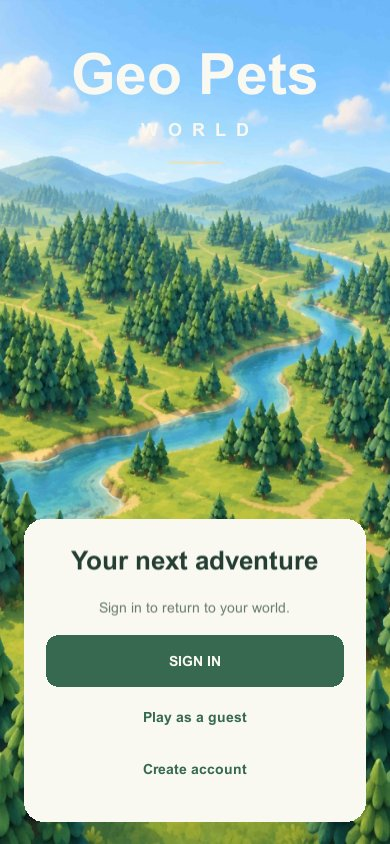
The start screen: a painted valley with sign in, play as a guest and create account. 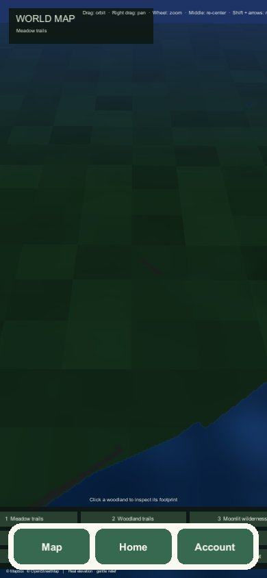
The world map at night: dark chequered ground, a lake edge and a test panel. 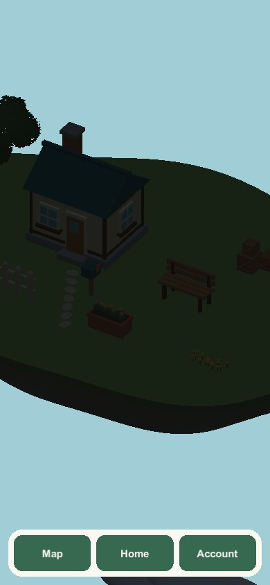
Home: a cottage and props on an island, unlit. 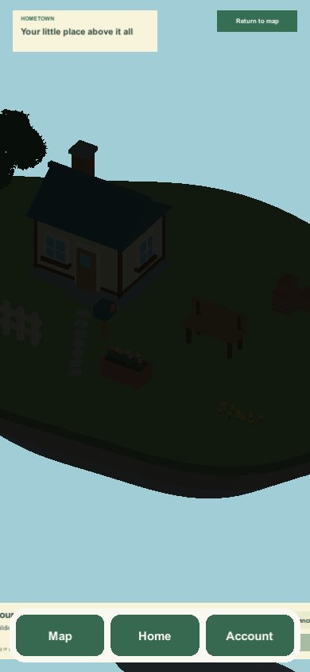
Home with its title card and a Return to map button.
Checkpoint 2, 14 to 16 September
Little changes on screen the first evening. By the 16th the tabs have become round icons and Home has a rearrange panel.
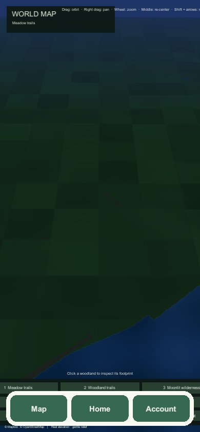
The map again, with the same three tabs. 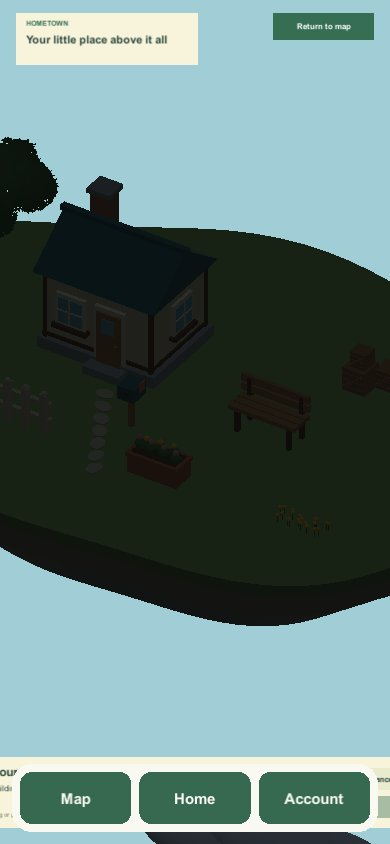
Home, with its title card and Return to map button. 16 September: round icons along the bottom, a worker badge and a Make yourself at home panel. 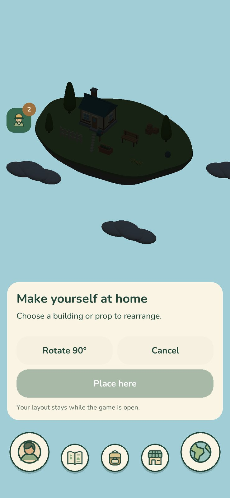
The same screen a few minutes later, at twice the resolution and with the island framed larger.
Checkpoint 3, 20 September
A meadow and a rock field with roads and a coast, a market stall, a Home on a cloud-covered island with its first buildings, an inventory and a market screen.
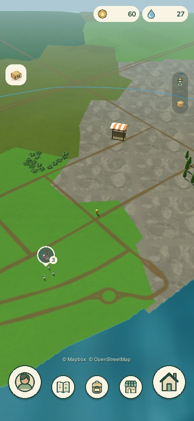
The world map at the default zoom: grass, a rock field, roads, a stall and a pin for a group of critters. 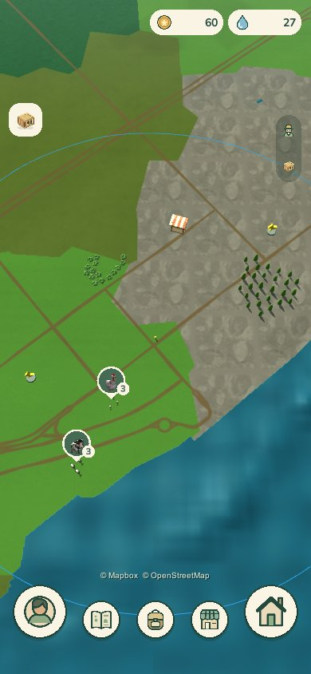
Zoomed out, with the coast and the whole range circle in view. 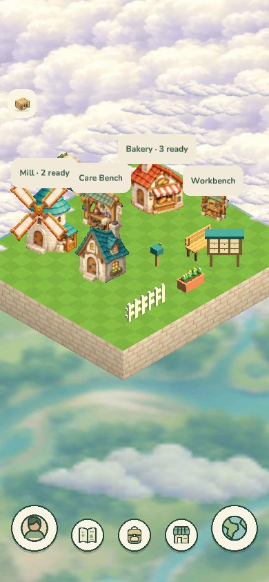
Home: a square lawn above the clouds with the Mill, Bakery, Care Bench and Workbench. 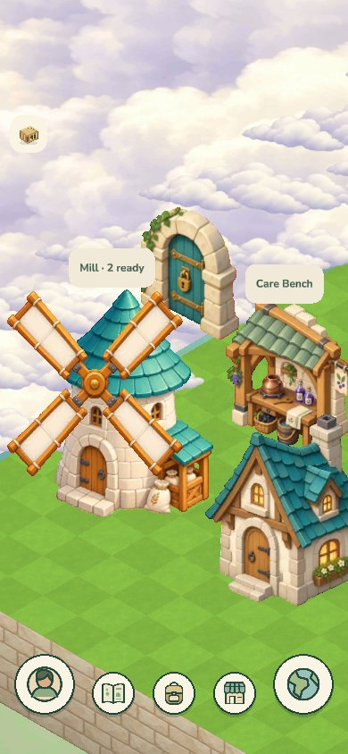
Close in on the Mill and the locked door to more land. 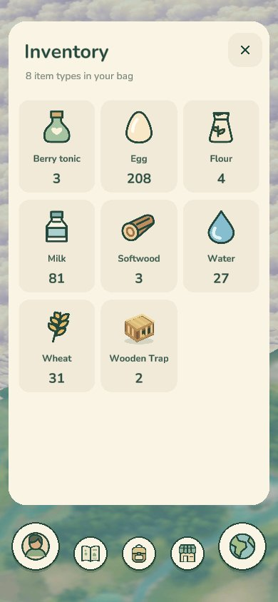
The inventory: eight kinds of item in a bag. 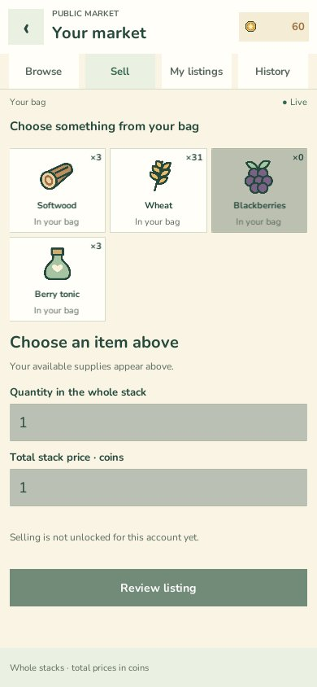
The market's Sell tab: choose something from the bag, set a quantity and a price.